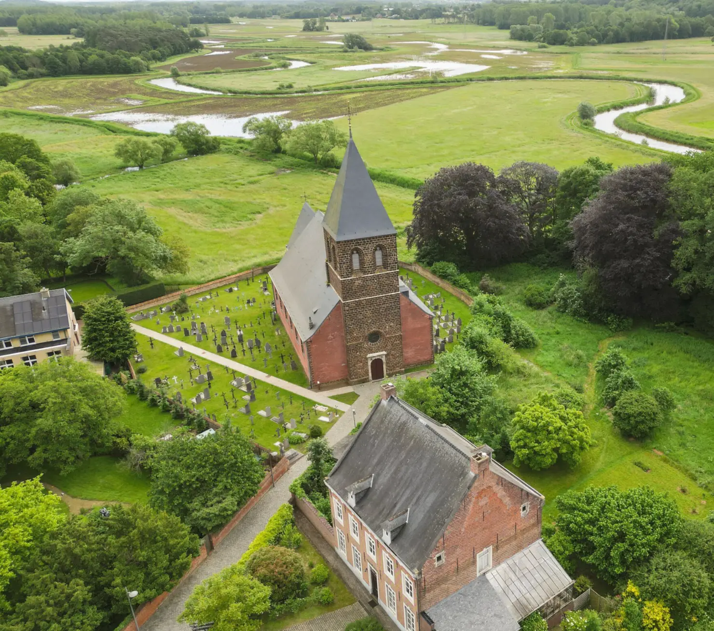
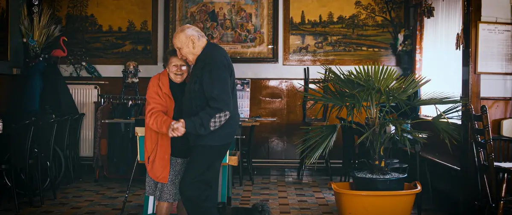
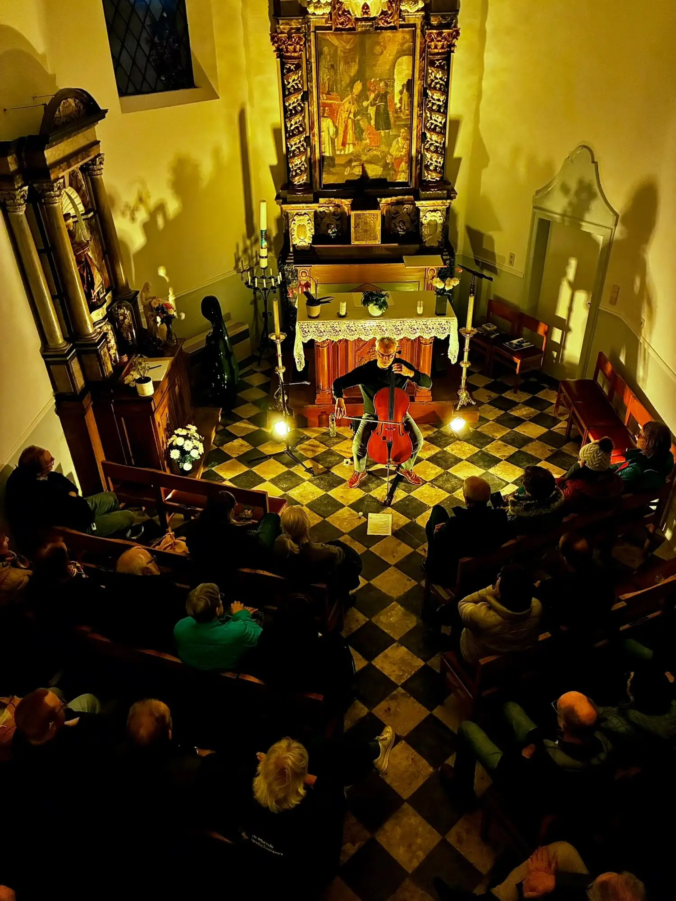

Pour les programmateurs
Productions
Merodefestival crée des productions scéniques, des installations, des concepts sur mesure, des albums et des films.
Productions scéniques
Concerts et spectacles de Merodefestival, à programmer dans des centres culturels, des festivals et des lieux particuliers.
- Rhagium InquisitorNouvel album et tournée, saison 2027–2028Rhagium InquisitorAndries Boone, en live en quatuor ou en sextuorSur son quatrième album solo, Andries Boone fusionne mondes acoustique et électronique. Violon, violon octave, mandoline, nyckelharpa et musette baroque rencontrent synthés et séquenceurs, inspirés par les musiques traditionnelles scandinaves et bretonnes, la tradition du cor de chasse et l’électronique des années quatre-vingt et nonante.Voir la production →
 Programme de Noël 2027, 2028O KerstnachtEléonor & ensemble, avec Philippe Laloy, Vincent Noiret et Maarten DecombelDes chants de Noël médiévaux sous un jour nouveau : Eléonor exhume des chansons oubliées des anciens Pays-Bas, en néerlandais contemporain, entre musique ancienne, jazz et folk.Voir la production →
Programme de Noël 2027, 2028O KerstnachtEléonor & ensemble, avec Philippe Laloy, Vincent Noiret et Maarten DecombelDes chants de Noël médiévaux sous un jour nouveau : Eléonor exhume des chansons oubliées des anciens Pays-Bas, en néerlandais contemporain, entre musique ancienne, jazz et folk.Voir la production → Nouvel album et tournée, 2027–2029Naragonia & The Ship of FoolsNaragonia, avec section de vents et section rythmiqueQui se trouve aujourd'hui à bord de la nef des fous ? Après leur concert anniversaire à guichets fermés, Naragonia est devenu un navire de neuf musiciens, avec cuivres et section rythmique. Une soirée entre chansons intimes sur le déracinement et musique pleine de résilience et de danse.Voir la production →
Nouvel album et tournée, 2027–2029Naragonia & The Ship of FoolsNaragonia, avec section de vents et section rythmiqueQui se trouve aujourd'hui à bord de la nef des fous ? Après leur concert anniversaire à guichets fermés, Naragonia est devenu un navire de neuf musiciens, avec cuivres et section rythmique. Une soirée entre chansons intimes sur le déracinement et musique pleine de résilience et de danse.Voir la production →
Installations
De la musique et des images qui donnent une histoire à un lieu, sur des sites patrimoniaux et dans des domaines naturels.
 Installation musicale, LangdorpHuis der WeemoedMerodefestival, avec Toon Van Mierlo, Reineke Van Hooreweghe et Sophie JannaDans une ancienne petite morgue près de la Sint-Pieterskerk de Langdorp, un film mystique et des sons célestes apportent du réconfort dans le deuil et l’adieu.Découvrir l'installation →
Installation musicale, LangdorpHuis der WeemoedMerodefestival, avec Toon Van Mierlo, Reineke Van Hooreweghe et Sophie JannaDans une ancienne petite morgue près de la Sint-Pieterskerk de Langdorp, un film mystique et des sons célestes apportent du réconfort dans le deuil et l’adieu.Découvrir l'installation →
Projet d'installation, 2026–2027Huis der Weemoed : sept lieux, sept chansonsMerodefestival, avec Laura Cortese, Toon Van Mierlo, Ward Dhoore, Reineke Van Hooreweghe et Bert HuysentruytSept lieux patrimoniaux du parc paysager de la Merode, chacun avec sa propre chanson pour une étape de la vie, interprétée par sept voix de femmes issues de traditions vivantes de musique populaire.Découvrir l'installation →
Écouter et regarder
Des albums, un podcast et des films coproduits par Merodefestival, à écouter, à regarder et à commander.
 Playlist, 2025Derroll 100Huit auteurs-compositeurs autour de Derroll Adams, produit par Laura CorteseLe 27 novembre 2025, le banjoïste Derroll Adams aurait eu cent ans. Laura Cortese a demandé à huit auteurs-compositeurs d'Europe et d'Amérique du Nord d'écrire chacun une nouvelle chanson inspirée de sa vie et de ses chansons, de Meskerem Mees et Kaia Kater à Rowan Rheingans et Johannes Wannyn.Voir le projet →
Playlist, 2025Derroll 100Huit auteurs-compositeurs autour de Derroll Adams, produit par Laura CorteseLe 27 novembre 2025, le banjoïste Derroll Adams aurait eu cent ans. Laura Cortese a demandé à huit auteurs-compositeurs d'Europe et d'Amérique du Nord d'écrire chacun une nouvelle chanson inspirée de sa vie et de ses chansons, de Meskerem Mees et Kaia Kater à Rowan Rheingans et Johannes Wannyn.Voir le projet → Album, CD et vinyleThe Sound of the AbbeyTreize artistes et ensembles en résidence à l'Abdij van ParkTrois années de résidences musicales à l’Abdij van Park, tout près de Louvain : treize artistes et ensembles ont chacun créé un morceau pour un lieu de l’abbaye, de la bibliothèque et du cloître jusqu’au chœur, et l’ont enregistré sur place.Voir le projet →
Album, CD et vinyleThe Sound of the AbbeyTreize artistes et ensembles en résidence à l'Abdij van ParkTrois années de résidences musicales à l’Abdij van Park, tout près de Louvain : treize artistes et ensembles ont chacun créé un morceau pour un lieu de l’abbaye, de la bibliothèque et du cloître jusqu’au chœur, et l’ont enregistré sur place.Voir le projet → Playlist, livre et CDOde aan de MerodeNeuf artistes et ensembles en résidence dans la MerodeNeuf artistes, duos et ensembles de la scène folk et musiques du monde flamande sont partis en résidence dans la Merode. Leur voyage de découverte à travers la nature et le patrimoine a donné quinze nouveaux morceaux, chacun une ode à la Merode.Voir le projet →
Playlist, livre et CDOde aan de MerodeNeuf artistes et ensembles en résidence dans la MerodeNeuf artistes, duos et ensembles de la scène folk et musiques du monde flamande sont partis en résidence dans la Merode. Leur voyage de découverte à travers la nature et le patrimoine a donné quinze nouveaux morceaux, chacun une ode à la Merode.Voir le projet → Podcast, 4 épisodesLe podcast de promenadeMerodefestival, avec Lennaert Maes, Jochen Smets et Bert HuysentruytAu cours d'une promenade dans le parc paysager de la Merode, des musiciens folk parlent de leur musique et jouent quelques morceaux en chemin, en pleine nature ou sur des sites patrimoniaux.Voir le projet →
Podcast, 4 épisodesLe podcast de promenadeMerodefestival, avec Lennaert Maes, Jochen Smets et Bert HuysentruytAu cours d'une promenade dans le parc paysager de la Merode, des musiciens folk parlent de leur musique et jouent quelques morceaux en chemin, en pleine nature ou sur des sites patrimoniaux.Voir le projet →
Documentaire, 3 partiesLes cafés populaires de la MerodeMerodefestival, avec l’auteur-compositeur-interprète Lennaert MaesL’auteur-compositeur-interprète Lennaert Maes visite trois vieux cafés populaires de la Merode et consacre une chanson à chaque tenancier : trois portraits émouvants d’environ 25 minutes chacun.Voir le projet →
Concepts sur mesure
Des concepts à réserver chez nous, mis en œuvre chez vous.

Concept sur mesure, en solo dans une chapelleKlanken in de kapelMerodefestival, avec des musiciens solistes issus du folk, des musiques du monde, du jazz et du classiqueUn musicien, une chapelle et un petit public : une courte soirée acoustique où la musique et le silence se rejoignent. Nous nous occupons de tout, de la concertation avec la chapelle à la coordination le jour même.Voir le concept → Concept sur mesure, promenade en musique livePromenades musicalesMerodefestival, avec des musiciens acoustiques issus du folk et des musiques du mondeUne promenade à travers le paysage, ponctuée de courtes prestations de musiciens acoustiques. Chez vous ou dans la Merode, entièrement organisée par nos soins, y compris comme team building ou événement clients.Voir le concept →
Concept sur mesure, promenade en musique livePromenades musicalesMerodefestival, avec des musiciens acoustiques issus du folk et des musiques du mondeUne promenade à travers le paysage, ponctuée de courtes prestations de musiciens acoustiques. Chez vous ou dans la Merode, entièrement organisée par nos soins, y compris comme team building ou événement clients.Voir le concept →